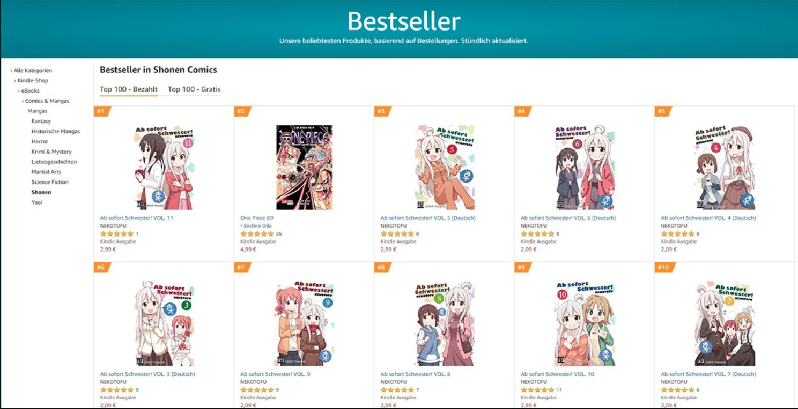

Han pasado algunos meses desde que finalizó la adaptación al anime de Onimai: I’m Now Your Sister! (Oniichan wa Oshimai!), y aunque la posibilidad de una secuela se va alejando conforme pasa el tiempo y Studio Bind vuelve a preocuparse por la producción de Mushoku Tensei: Jobless Reincarnation, parece que la popularidad de la franquicia todavía continúa por lo alto hasta la fecha.
En un popular foro de comentarios se compartieron una variedad de capturas mostrando distintos de videos en una variedad idiomas que todavía son tendencia hacia la fecha. Todos estos videos están centrados en la propia franquicia de Onimai: I’m Now Your Sister!.
De hecho, esa no es la única captura que está circulando en foros de comentarios en Japón. Resulta que el manga está teniendo un tremendo éxito en Alemania, puesto que una captura de Amazon Germany muestra que la serie ocupa nueve de las diez primeras posiciones en el listado de “Bestseller in Shonen Comic (Mangas Shonen más Vendidos)”.

Por supuesto, esto generó una variedad de comentarios:
- «No se puede evitar, es una chica muy linda».
- «El país está acabado si este tipo de cosas son las que se vuelven tendencia».
- «En Alemania, parece que esta serie tiene el dominio de ventas».
- «Después de todo, la lindura es lo que domina en este medio».
- «Arresten a todos los que vieron este anime completo».
- «Para ser honesto, al cuestión de haber sido un hombre en su vida previa termina siendo olvidada por los espectadores».
En resumen, la popularidad de Onimai: I’m Now Your Sister! sigue en aumento a pesar de que ha pasado algún tiempo desde que finalizó la adaptación al anime. Los videos relacionados con la franquicia siguen siendo tendencia en diversos idiomas, mientras que el manga está arrasando en Alemania, ocupando nueve de las diez primeras posiciones en el listado de mangas shonen más vendidos. Aunque los comentarios en torno a esta popularidad son variados, no se puede negar el impacto que esta serie está teniendo en diferentes partes del mundo.